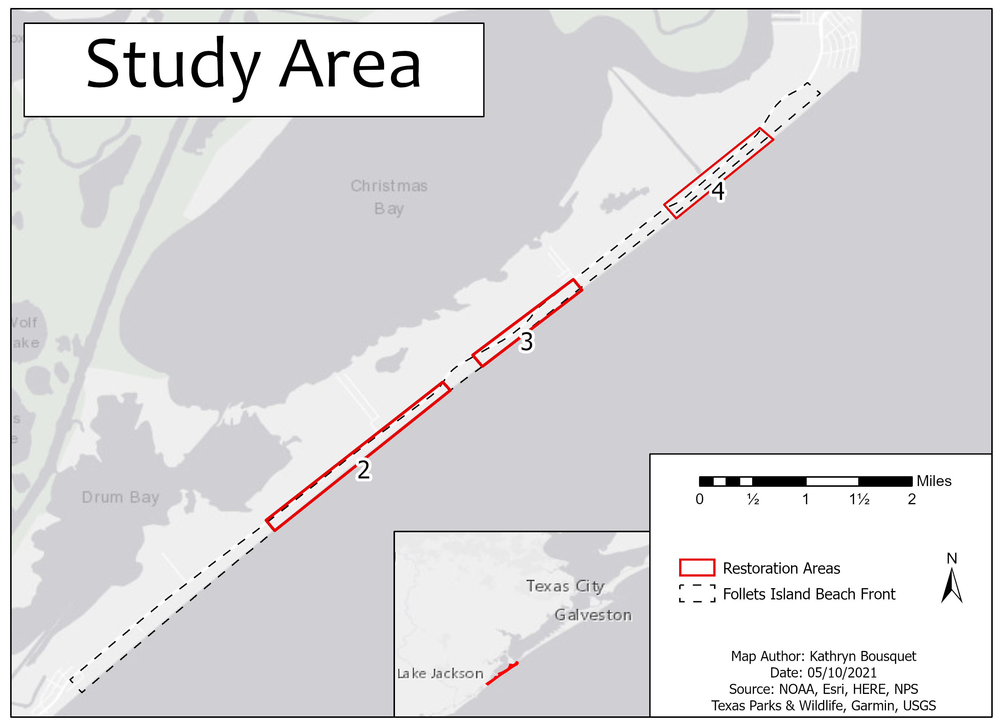
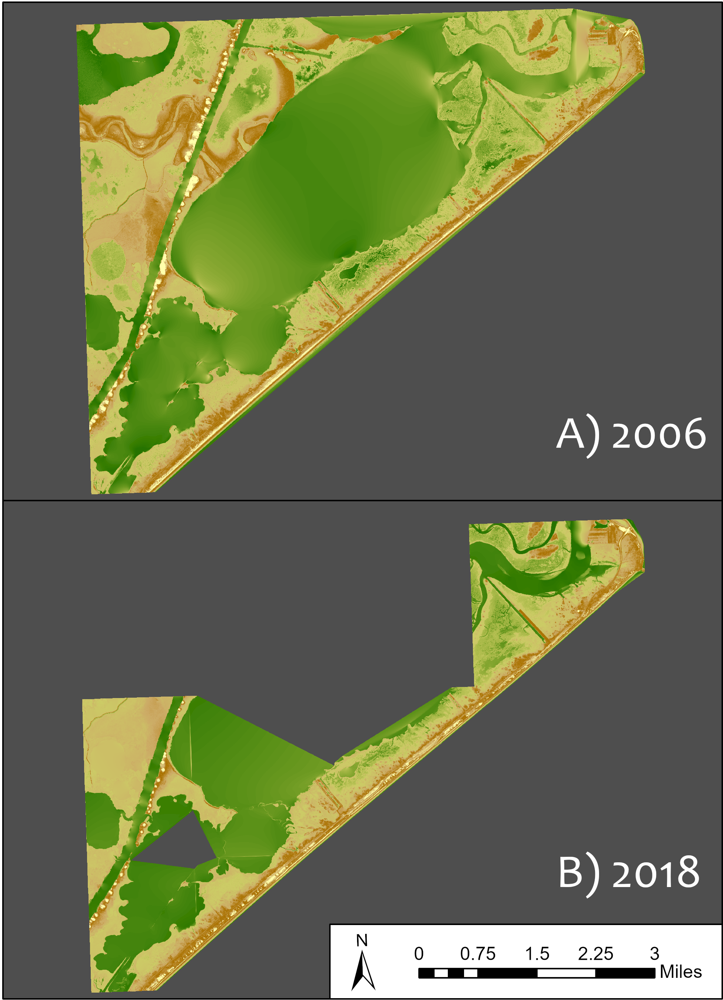
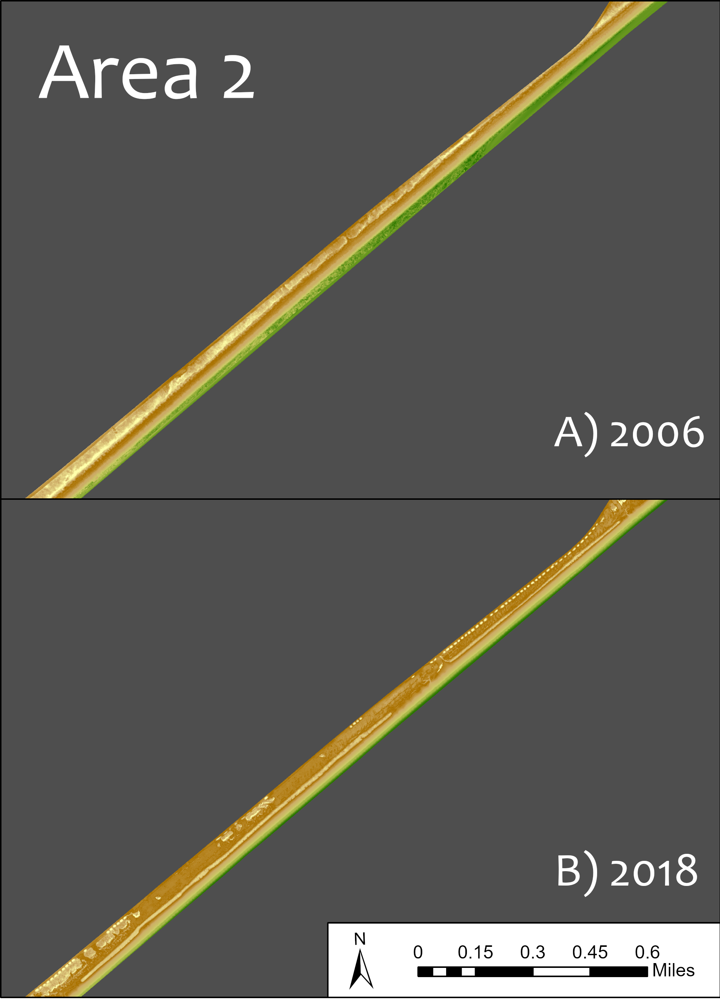
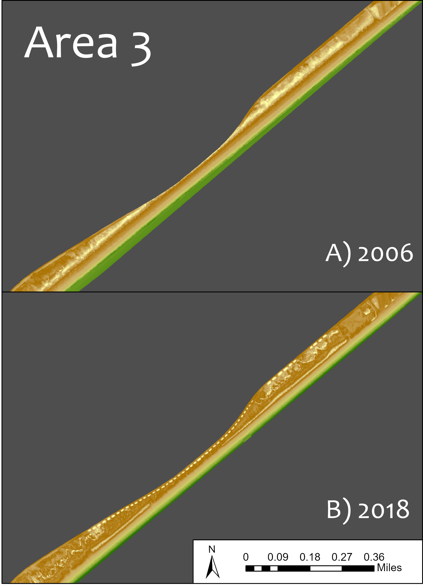
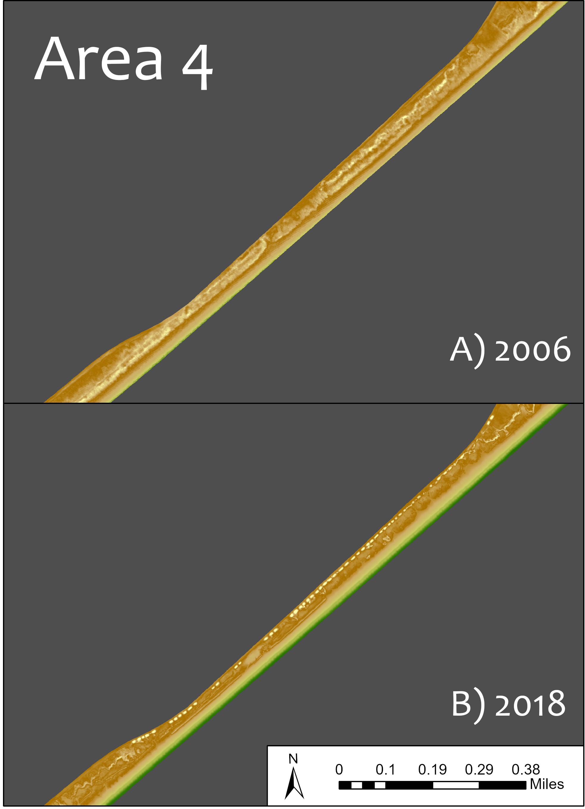

This was a semester project for my Spatial Systems Science course, where the goal was to utilize the
knowledge we
learned throughout the semester to create a project that arrives at a prescriptive or descriptive
spatial analysis result. For my project, I thought it would be interesting to study the change in
beach and dune elevation before and after a dune restoration project took place on Follets Island.
Follets Island is a small barrier peninsula south-west of Galveston, Texas. The dune restoration
took place somewhere between 2013-2014, so I found LAS point cloud data for 2006 and
2018 (source: NOAA Digital Coast LIDAR data repository). The LAS data were converted to elevation
rasters using ArcGIS Pro.
This map displays
the study area of Follets Island, with three of the four restoration areas outlined.

This next map displays the full elevation rasters for 2006 and 2018.

This map displays the elevation rasters for Area 2. The width of the beach front near
sea
level height, represented by the green area, is wider for 2006 than 2018, which suggests that the
elevation in this area is higher closer to the water in 2018 than it is in 2006. There is also a
strip
of higher elevation for both years that appears to be the dune line when cross-referenced with
ESRI's
imagery basemap. This dune line appears to be closer to the water in 2018 than in 2006.

This map displays the elevation rasters for Area 3. The satements made for Area 2
appear to
be the same for Area 3.

This last map displays the elevation rasters for Area 4. In this area, we actually see
the
opposite of Areas 2 and 3. Here, the beach front at sea level for 2018 is wider than it is for 2006.
There also appears to be a lack of dunes in the northern half of Area 4 in the 2018 elevation. There
are
no places with significant elevation height compared to surroundings, except for these circular
features
that follow alongside the highway. These features, when cross-referenced with ESRI’s imagery basemap
and
Google Earth, appear to be man-made hills. On the difference raster, these features range between
1.73-2.25m higher in 2018 than 2006, so they must have been made sometime after the 2006 flight.

I created a table of raster statistics (not shown) that shows the mean, maximum, and minimum
elevation values for each restored area, as well as for the regions outside of these. This table
suggests that there is minimal change in elevation from 2006 and 2018 in the unrestored areas
(0.11m), but more of a change is seen inside the restored areas (+/- 0.24m to 0.372m). The mean
elevation difference for Area 4 is negative rather than positive, which suggests this area
experienced a loss in elevation from 2006 to 2018.
Overall, there is a clear difference in elevation change from areas within and without the restored
sections. The total region outside the restored section has a minimal mean elevation change, while
the restored areas experienced a quarter-meter or greater change in elevation. There is also a clear
difference in elevation change from one restored area to the next. Areas 2 and 3 experienced
accretion between 2006 and 2018, whereas Area 4 has experienced erosion. It is unclear exactly what
could have caused this difference. It could be due to Area 4’s adjacent proximity to the San Luis
Pass, whereas the other two areas located further southwest. Vegetation bias could be also be a
factor. When compared to ESRI’s imagery basemap, the 2018 raster appears to have picked up on more
vegetation than in the 2006 raster. This is not to suggest that new vegetation had grown after the
2006 flight, as there was no 2006 imagery found to prove or disprove that. The techniques used to
filter vegetation in the data sets might have a small part in the elevation changes seen here.